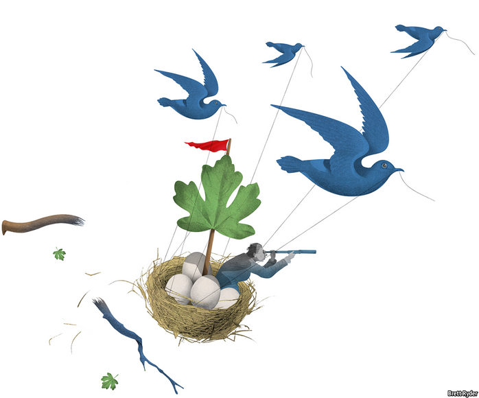

2020-12-31T09:54:02+00:00
熊彼特
加固雀巢
世界上最大的食品公司让人一尝未来的味道

瑞士以钟表闻名。但它也是另一家企业的所在地，这家企业在其历史的大部分时间里都以钟摆般规律的节奏运营着。它就是雀巢，世界上最大的食品公司。它于19世纪60年代在日内瓦湖畔的小镇沃韦（Vevey）成立，至今那里仍是它的家园。长期以来它都被视为一个不透明的庞然大物，有着与世隔绝的文化，偶尔爆出些丑闻。然而，人们每天要消费10亿件雀巢的产品。去年其销售额超过930亿美元。当它谈论咖啡时，用的单位是千亿杯。在美国和亚洲，数据可能是新时代的石油，但在欧洲，热饮比原油或计算还火热。雀巢市值3200亿美元，超过欧洲最大的能源公司荷兰皇家壳牌公司和欧洲软件巨头SAP。
许多全球食品公司都是可靠性的典范。其他受尊崇的品牌如金宝汤、达能、卡夫亨氏，以及联合利华（如今销售的非食品类商品比食品更多）的历史也可追溯到一个世纪前。然而在五年前，增长急剧放缓，该行业猛然间发现自己遭遇围攻。热衷无情削减成本的巴西私募股权集团3G资本合并了亨氏和卡夫。两年后，美国的维权投资者盯上了雀巢，要求用同样的方式调整其业务结构。同年，卡夫亨氏试图收购联合利华未果，之后利润暴跌，3G的声誉也因此受损。
欧洲的消费品业务仍在以仅为十年前一半的速度增长。这个行业迫切需要来个人给它灌点儿咖啡因。没有谁比马克·施耐德（Mark Schneider）更能胜任这项任务了。他是雀巢近一个世纪以来第一位来自公司外部的首席执行官，也是雀巢三年转型期背后的“首席咖啡师”。
施耐德是个有话直说的德国人，持有美国护照，爱说俏皮话，与专横的对冲基金形成了鲜明的对照。他不容易惊慌，但也不志得意满。他来自食品行业之外，因此能贡献不同的视角。他实施了杰弗瑞银行的马丁·德博（Martin Deboo）所说的“首席执行官版本的布莱尔主义”，在美国人期望的激进利润率目标和瑞士人能忍受的小打小闹的重组之间走出一条中间路线。最重要的是，他重新唤起了对有机销售增长的信心，在雀巢，这一指标从2011年的年均7.5%下降到他接手那一年的2.4%。在3G资本大刀阔斧改革企业的时代，销售增长是怂包才操心的事。再也不是这样了——一定程度上是施耐德的功劳。
在食品行业，销售增长的重要性怎么强调都不为过，经纪公司盛博称之为该行业的“命脉”。近年来，销售增长受到部分富裕国家饮食变化、数字化和通缩以及新兴市场疲软的冲击。但施耐德迅速找到了解决办法。
首先是创新。电子商务崛起后，新贵小品牌也能挤开巨头公司，直接把东西卖给消费者。他的对策是迫使研究人员更快地将雀巢的创意推向市场，通常是以数字的形式。他说，一辆汽车有时需要三年时间才能推向市场，这是可以接受的，但巧克力不行。他寄予厚望的新创意包括抗过敏猫粮和素食汉堡。其次，他在达成变革性的交易时动作很快。2018年，雀巢在拿到星巴克许可的六个月内就推出了24款星巴克咖啡。第三，他买卖公司，扩大快速增长的营养保健业务，抛售乏善可陈的那些，例如在美国的冰淇淋和在欧洲的包装肉类业务。
雀巢还加快了其他领域的增长。它正不懈地向高端市场挺进。去年，高端产品的销售份额上升至超过四分之一，其中有Nespresso“冰澳白”胶囊咖啡等赤裸裸地主打“逼格”的产品。它投身植物性食品和其他健康食品的热潮（先别管这会让它的甜食业务越发显得处境尴尬）。它还迫切希望提高自己在可持续发展方面的声誉。12月3日，它表示将在五年内投资12亿瑞士法郎（13亿美元）帮助农民改良土壤，作为其投入32亿瑞士法郎应对气候变化计划的一部分。它还承诺在2025年前做到所有产品包装都可回收或重复利用。这些都是在试图软化其企业巨无霸的形象，这种形象不仅让年轻消费者却步，也让自我感觉良好的富人反感。
就目前来看，这一切打动了投资者。正如德博指出的，雀巢的转型已经在股价上得到了十足的回馈，尽管这可能还言之过早。销售增长仍未恢复到公司之前承诺的每年4%到6%的水平。婴儿配方奶粉业务依然吊车尾。在疫情的冲击下，雀巢面向办公室的水业务连同它最便宜的瓶装产品也落在了后面。全行业都面临的问题雀巢同样未能幸免。新兴市场的增长正在放缓，那里的人们的零食支出减少，在数字商品上的支出增加。此外，低收入也将抑制年轻人对高端产品的兴趣。
没那么甜
相对来说，新冠病毒对雀巢还算手软。它大部分产品都是供人们在家里而不是带出门使用的，所以基本食品的销售增长可以轻松盖过甜食业务的损失。雀巢在欧洲的竞争对手达能在去年初就已经不大跟得上它，现在已经落后了许多。
尽管如此，施耐德不是盲目乐观主义者。在最近一次Zoom会议上，尽管股市因新冠疫苗的前景而一片欢腾，他还是很谨慎。作为一名惯于处理冷链的前医疗集团主管，他怀疑人们是否有能力在所需温度下分发疫苗，特别是在发展中国家。疫苗接种普及耗时越久，公共债务就会越多，可能会给接下来这十年蒙上“长长的阴影”。除此之外，他指出，人口结构的挑战正在逼近，会有越来越多的老年人需要医疗护理。“我的展望相当保守。”他承认。但在150多年的历史中，雀巢连更难的情况也都挺过去了。
2020-12-31T09:54:02+00:00
Schumpeter
Feathering its own Nestlé
The world’s biggest food company gives a flavour of the future
SWITZERLAND IS KNOWN for its timepieces. But it is also home to another business that for most of its history has operated with metronomic regularity. That is Nestlé, the world’s biggest food company. Established in the 1860s in Vevey, a small town on the shores of Lake Geneva that remains its home to this day, it has long been seen as an opaque behemoth with an insular culture and the occasional brush with scandal. Yet a billion of its products are consumed every day. Its sales last year surpassed $93bn. When it talks coffee, it talks in 100bn cupfulls. Data may be the new oil in America and Asia, but in Europe hot beverages are hotter than either crude or computing. With a market value of $320bn, Nestlé is worth more than Royal Dutch Shell, the continent’s biggest energy firm, and SAP, its software giant.
Many global food firms have been models of reliability. Other venerable names, such as Campbell’s, Danone, Kraft Heinz and Unilever (which sells more non-food items than food), also have roots stretching back over a century. Yet five years ago, amid a sharp slowdown in growth, the industry suddenly found itself under siege. 3G, a Brazilian private-equity group with a zeal for ruthless cost-cutting, merged H.J. Heinz and Kraft Foods. Two years later American activists targeted Nestlé, demanding the same recipe. The same year Kraft Heinz tried and failed to take over Unilever, and later saw its profits tumble, leaving 3G’s reputation in tatters.
Europe’s consumer-goods business is still growing at about half the pace it did a decade ago. It badly needs a caffeine shot. No one has shown better how to administer one than Mark Schneider, Nestlé’s first chief executive from outside the firm in almost a century—and the
Mr Schneider, a straight-talking German with an American passport and a fondness for quips, is the perfect foil for bossy hedge funds. He is not prone to panic. But nor is he complacent. He came from outside the food industry, so sees it with fresh eyes. He carried out what Martin Deboo of Jefferies, a bank, calls “the chief-executive version of Blairism”, steering a middle course between the aggressive profit-margin targets desired by the Americans and the meagre restructuring tolerable to the Swiss. Most significant, he revived confidence in organic sales growth, a metric that had fallen at Nestlé from an annual 7.5% in 2011 to 2.4% the year he took over. During the slash-and-burn era of 3G, sales growth was for wimps. No longer—partly thanks to Mr Schneider.
The importance of sales growth is hard to overstate in food. Bernstein, a broker, calls it the “lifeblood” of the industry. In recent years it has been pummelled by changing diets, digitalisation and deflation in parts of the rich world, as well as sluggishness in emerging markets. But Mr Schneider swiftly found remedies.
The first was innovation. Thanks to e-commerce, small upstart brands were able to elbow aside the behemoths and sell directly to consumers. He responded by forcing boffins to bring Nestlé’s ideas to market more quickly, often digitally. The three years it sometimes took them was fine for a car, but not for a chocolate bar, he says. New ideas he cherishes include allergy-busting cat foods and vegan burgers. Second, he was quick to strike transformative deals. Within six months of licensing Starbucks coffee in 2018, Nestlé had already launched 24 of the chain’s products. Third, he bought and sold companies, adding to fast-growing nutritional-health businesses and selling down pedestrian ones such as ice cream in America and packaged meat in Europe.
Nestlé has sped up growth in other areas, too. It is moving relentlessly upmarket. Last year the share of sales from premium products rose to more than a quarter, including items with naked snob appeal such as “flat white over ice” Nespresso pods. It has joined the craze for plant-based foods and other healthy fare (never mind that this makes its confectionery business look increasingly out of place). And it is desperate to improve its reputation for sustainability. On December 3rd it said it would invest SFr1.2bn ($1.3bn) over five years to help its farmers improve their soils as part of a SFr3.2bn effort to combat climate change. It has also pledged to make packaging recyclable or resuable by 2025. These are attempts to soften its image as a corporate goliath, which puts off not just young shoppers but snobby well-off ones, too.
For now, investors are impressed. As Mr Deboo notes, the share price has already awarded Nestlé ten out of ten for the turnaround, though that may be premature. Sales growth has still not recovered to the 4-6% a year that the firm once promised. Infant formula remains a laggard. So does water, with its cheapest bottled products, consumed in offices, battered by the pandemic. And Nestlé is not immune to industry-wide problems. Growth is slowing in emerging markets as people there spend less on ingestible treats and more on digital goods. Moreover, low incomes among the young will dampen their appetite for premium products.
Not so sweet
Relatively speaking, the virus has been kind to Nestlé. Most of its products are used at home, rather than on-the-go, so extra sales for the pantry easily eclipsed what was lost at the sweet shop. Danone, a European rival that was already struggling to keep up with Nestlé at the start of last year, has slipped much further behind.
Still, Mr Schneider is no blithe optimist. In a recent Zoom meeting held amid stockmarket euphoria about the prospects for a covid-19 vaccine, he was cautious. As a former health-care executive used to handling cold chains, he expressed doubts about the ability to distribute vaccines at the required temperatures, especially in the developing world. The longer it takes to spread the vaccine, the higher public debts will pile up, potentially casting a “long shadow” over the 2020s. On top of that, he notes, a demographic challenge is looming with rising numbers of elderly requiring medical care. “I’m quite muted in my outlook,” he admits. But Nestlé, in more than 150 years of history, has survived worse. ■
2020-12-31T09:54:02+00:00
熊彼特
加固雀巢
世界上最大的食品公司讓人一嘗未來的味道
瑞士以鐘錶聞名。但它也是另一家企業的所在地，這家企業在其歷史的大部分時間裡都以鐘擺般規律的節奏運營着。它就是雀巢，世界上最大的食品公司。它於19世紀60年代在日內瓦湖畔的小鎮沃韋（Vevey）成立，至今那裡仍是它的家園。長期以來它都被視為一個不透明的龐然大物，有着與世隔絕的文化，偶爾爆出些醜聞。然而，人們每天要消費10億件雀巢的產品。去年其銷售額超過930億美元。當它談論咖啡時，用的單位是千億杯。在美國和亞洲，數據可能是新時代的石油，但在歐洲，熱飲比原油或計算還火熱。雀巢市值3200億美元，超過歐洲最大的能源公司荷蘭皇家殼牌公司和歐洲軟件巨頭SAP。
許多全球食品公司都是可靠性的典範。其他受尊崇的品牌如金寶湯、達能、卡夫亨氏，以及聯合利華（如今銷售的非食品類商品比食品更多）的歷史也可追溯到一個世紀前。然而在五年前，增長急劇放緩，該行業猛然間發現自己遭遇圍攻。熱衷無情削減成本的巴西私募股權集團3G資本合并了亨氏和卡夫。兩年後，美國的維權投資者盯上了雀巢，要求用同樣的方式調整其業務結構。同年，卡夫亨氏試圖收購聯合利華未果，之後利潤暴跌，3G的聲譽也因此受損。
歐洲的消費品業務仍在以僅為十年前一半的速度增長。這個行業迫切需要來個人給它灌點兒咖啡因。沒有誰比馬克·施耐德（Mark Schneider）更能勝任這項任務了。他是雀巢近一個世紀以來第一位來自公司外部的首席執行官，也是雀巢三年轉型期背後的“首席咖啡師”。
施耐德是個有話直說的德國人，持有美國護照，愛說俏皮話，與專橫的對沖基金形成了鮮明的對照。他不容易驚慌，但也不志得意滿。他來自食品行業之外，因此能貢獻不同的視角。他實施了傑弗瑞銀行的馬丁·德博（Martin Deboo）所說的“首席執行官版本的布萊爾主義”，在美國人期望的激進利潤率目標和瑞士人能忍受的小打小鬧的重組之間走出一條中間路線。最重要的是，他重新喚起了對有機銷售增長的信心，在雀巢，這一指標從2011年的年均7.5%下降到他接手那一年的2.4%。在3G資本大刀闊斧改革企業的時代，銷售增長是慫包才操心的事。再也不是這樣了——一定程度上是施耐德的功勞。
在食品行業，銷售增長的重要性怎麼強調都不為過，經紀公司盛博稱之為該行業的“命脈”。近年來，銷售增長受到部分富裕國家飲食變化、數字化和通縮以及新興市場疲軟的衝擊。但施耐德迅速找到了解決辦法。
首先是創新。電子商務崛起後，新貴小品牌也能擠開巨頭公司，直接把東西賣給消費者。他的對策是迫使研究人員更快地將雀巢的創意推向市場，通常是以數字的形式。他說，一輛汽車有時需要三年時間才能推向市場，這是可以接受的，但巧克力不行。他寄予厚望的新創意包括抗過敏貓糧和素食漢堡。其次，他在達成變革性的交易時動作很快。2018年，雀巢在拿到星巴克許可的六個月內就推出了24款星巴克咖啡。第三，他買賣公司，擴大快速增長的營養保健業務，拋售乏善可陳的那些，例如在美國的冰淇淋和在歐洲的包裝肉類業務。
雀巢還加快了其他領域的增長。它正不懈地向高端市場挺進。去年，高端產品的銷售份額上升至超過四分之一，其中有Nespresso“冰澳白”膠囊咖啡等赤裸裸地主打“逼格”的產品。它投身植物性食品和其他健康食品的熱潮（先別管這會讓它的甜食業務越發顯得處境尷尬）。它還迫切希望提高自己在可持續發展方面的聲譽。12月3日，它表示將在五年內投資12億瑞士法郎（13億美元）幫助農民改良土壤，作為其投入32億瑞士法郎應對氣候變化計劃的一部分。它還承諾在2025年前做到所有產品包裝都可回收或重複利用。這些都是在試圖軟化其企業巨無霸的形象，這種形象不僅讓年輕消費者卻步，也讓自我感覺良好的富人反感。
就目前來看，這一切打動了投資者。正如德博指出的，雀巢的轉型已經在股價上得到了十足的回饋，儘管這可能還言之過早。銷售增長仍未恢復到公司之前承諾的每年4%到6%的水平。嬰兒配方奶粉業務依然吊車尾。在疫情的衝擊下，雀巢面向辦公室的水業務連同它最便宜的瓶裝產品也落在了後面。全行業都面臨的問題雀巢同樣未能倖免。新興市場的增長正在放緩，那裡的人們的零食支出減少，在數字商品上的支出增加。此外，低收入也將抑制年輕人對高端產品的興趣。
沒那麼甜
相對來說，新冠病毒對雀巢還算手軟。它大部分產品都是供人們在家裡而不是帶出門使用的，所以基本食品的銷售增長可以輕鬆蓋過甜食業務的損失。雀巢在歐洲的競爭對手達能在去年初就已經不大跟得上它，現在已經落後了許多。
儘管如此，施耐德不是盲目樂觀主義者。在最近一次Zoom會議上，儘管股市因新冠疫苗的前景而一片歡騰，他還是很謹慎。作為一名慣於處理冷鏈的前醫療集團主管，他懷疑人們是否有能力在所需溫度下分發疫苗，特別是在發展中國家。疫苗接種普及耗時越久，公共債務就會越多，可能會給接下來這十年蒙上“長長的陰影”。除此之外，他指出，人口結構的挑戰正在逼近，會有越來越多的老年人需要醫療護理。“我的展望相當保守。”他承認。但在150多年的歷史中，雀巢連更難的情況也都挺過去了。